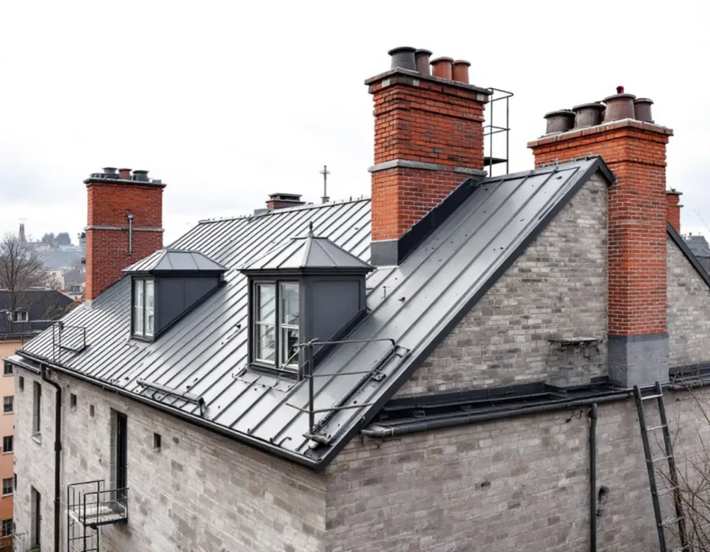
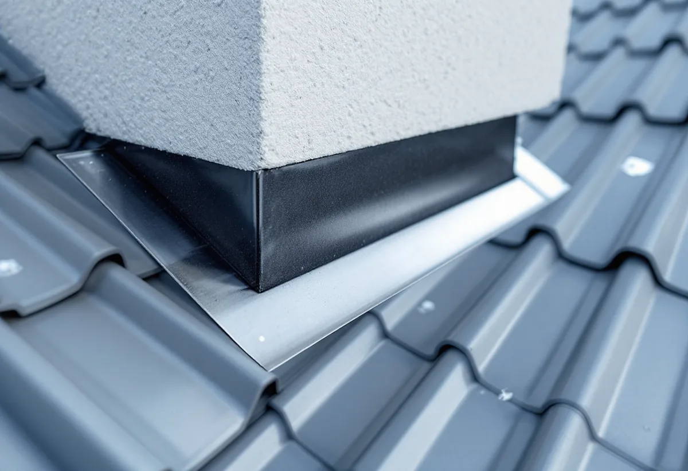
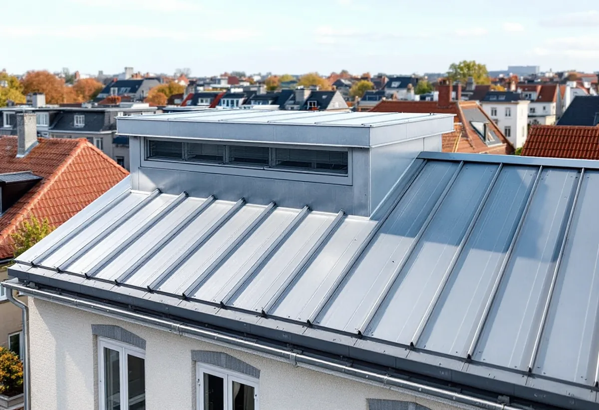

Platsbesök
Gratis besök på taket och på vinden där läckan syns.
Ett plåttak på Kungsholmen är sällan bara plåt. Där sticker huvar, kanaler, skorstenar och stegar upp genom taket, och det är runt dem det oftast läcker. Geal Entreprenad AB har egna plåtslagare som byter och tätar plåt kring genomföringar, lägger om takplåt och tar fram underlaget som föreningen behöver.

Stadens områdesfakta för 2025 räknar 44 554 bostäder i Kungsholmens stadsdelsområde. 30 598 av dem är bostadsrätter, 10 828 är övriga hyresrätter och 2 791 hör till allmännyttan, medan småhusen bara är några hundra. Det betyder att ett plåtjobb på taket i de flesta fall beställs av en bostadsrättsförening eller en fastighetsägare, inte av den som bor högst upp.
Kungsholmen ingår i den klassiska stenstaden, som översiktsplanens riksintressedel beskriver som tät kvartersstad med bebyggelse från 1870 till 1930. Ett av karaktärsdragen som räknas upp är de sluttande taken, oftast plåttäckta och med en lutning upp till 45 grader från fasaden. Taket syns alltså från gatan, och därför bryr sig både staden och föreningen om hur plåten ser ut.

När en förening ser över ventilationen, till exempel i samband med stambyte, blir taket en del av projektet. Stockholms stad skriver att den som ska sätta upp en ny ventilationshuv på taket eller dra en ventilationskanal på fasaden oftast behöver bygglov, eftersom det kan påverka byggnadens utseende. Ett enstaka aggregat som är mindre än 80 x 60 x 30 centimeter och inte syns från gatan klarar sig däremot normalt utan lov.
För flerbostadshus gäller dessutom att ändringar på fasad eller tak som vetter mot allmän plats kräver bygglov. Staden räknar byte av kulör eller material på taket som en fasadändring, liksom antenner, huvar och skorstenar. Vi ritar därför in nya huvar och deras plåtinklädnad redan i förslaget, så att föreningen kan söka lov med rätt underlag.
En ny utvändig skorsten kan kräva bygglov och ska redovisas på fasadritningar, och den som installerar eller väsentligt ändrar en eldstad eller rökkanal ska göra en anmälan och vänta på startbesked. Staden råder fastighetsägaren att planera skorstenens utformning och placering tillsammans med skorstensfejarmästaren. Plåtslagaren kommer in när skorstenen är bestämd: med beslag, krage och anslutning mot takplåten.
Läckor vid en skorsten eller en huv syns ofta först som en fläck i taket på våningen under. Vi går upp, öppnar plåten runt genomföringen och ser om felet sitter i själva anslutningen, i en skadad fals eller i underlaget. Hör fasaden också till projektet beskriver vi helheten under fasadrenovering på Kungsholmen.
På ett stenhus med flera våningar mot gatan behövs säkra vägar upp, skyddsräcken och ibland en ställning mot gården. Vi går igenom med föreningen var materialet kan tas upp, hur trapphuset skyddas och vilka lägenheter som behöver få veta när det bullrar. Stadens sida om flerbostadshus påminner också om att det är bra att informera grannar och styrelsen om det som planeras.
När arbetet är klart lämnar vi en beskrivning av vad som har bytts och var, med foton från taket. Det är underlag som en styrelse har nytta av när nästa takinspektion görs eller när en ny styrelse tar över. Läs mer om tjänsten under plåtslagare.

Gratis besök på taket och på vinden där läckan syns.
Beskrivning av plåt, huvar och genomföringar med foton.
Ritningar när huvar, kanaler eller material ändras mot gatan.
Tillträde, ställning och information till de boende.
Byte och tätning av plåt kring varje genomföring.
Foton och beskrivning till styrelsen.
Bor du i bostadsrätt ger plåtarbeten på husets tak, hängrännor och stuprör inget rotavdrag enligt Skatteverket. Avdraget i en bostadsrätt gäller arbete innanför lägenhetens väggar, tak och golv som du själv ansvarar för enligt stadgarna, och taket är föreningens sak.
Äger du ett av de få småhusen i stadsdelen räknar Skatteverket däremot plåttak, hängrännor och stuprör som rotarbete, och då drar Geal avdraget direkt på fakturan.
Takets yta och lutning, antalet huvar, skorstenar och genomföringar, om takplåten ska läggas om eller bara lagas, ställning och skydd samt om bygglovshandlingar behövs. Efter ett gratis platsbesök får föreningen ett skriftligt kostnadsförslag.
Plåttak, hängrännor och beslag.
Plåtslagare i Stockholm →Stambyte, stämmobeslut och 30-talshus.
Badrumsrenovering på Kungsholmen →Föreningens stambyte.
Byggföretag på Kungsholmen →Slätputs på funkishus, lagad utan synliga skarvar.
Fasadrenovering på Kungsholmen →Stenhusen, funkishusen och bygglovet.
Fönsterbyte på Kungsholmen →Fönstret i bostadsrätten, insida och beslag.
Fönsterrenovering på Kungsholmen →Stegljud, golvval och styrelsens tillstånd.
Golvläggare på Kungsholmen →Slipa och lacka golvet i bostadsrätten.
Golvslipning på Kungsholmen →Fläkten, kanalen och föreningen.
Köksrenovering på Kungsholmen →Funkislägenheter, stadgar och ROT i bostadsrätten.
Målare på Kungsholmen →Villorna på Stora Essingen.
Takbyte på Kungsholmen →Ny tapet på putsade lägenhetsväggar.
Tapetsering på Kungsholmen →Hela lägenheten från golv till tak.
Totalrenovering på Kungsholmen →